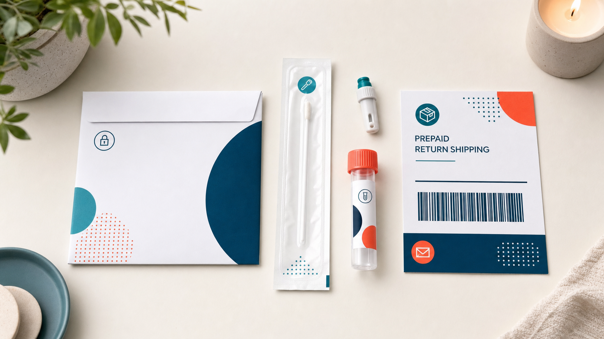
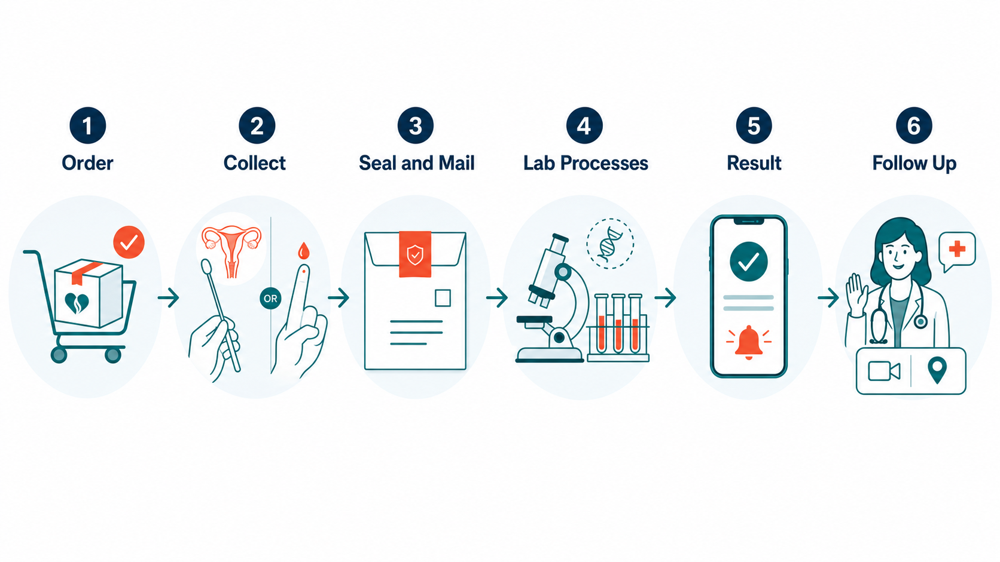

Key Takeaways
- Self-collected vaginal swabs tested by NAAT perform comparably to clinician-collected specimens for chlamydia and gonorrhea detection — pooled data in the Cook et al. PLOS ONE meta-analysis found sensitivity above 87% and specificity above 98%.[2]
- Dried blood spot (DBS) collection for syphilis, HIV, and hepatitis C antibody testing is validated by published evidence — a 2019 PLOS ONE study reported sensitivity above 98% and specificity above 99% for HIV, HBsAg, and syphilis on DBS versus paired serum.[9]
- Home-based STI testing increases screening uptake: a PLOS ONE RCT by Scholes et al. found completion rates were significantly higher in the home-collection arm than in the clinic arm, and a 2019 BMJ Global Health meta-analysis confirmed that self-collection raises case-finding rates overall.[5][6]
- The Everlywell female panel screens for chlamydia, gonorrhea, hepatitis C, trichomonas, and syphilis; HIV inclusion depends on panel variant. The urine-based CT/NG test covers only chlamydia and gonorrhea. The Visby rapid PCR, which Everlywell co-brands, is a separate product for immediate point-of-care testing.
- A positive result requires clinician follow-up for confirmatory testing where indicated, treatment per CDC 2021 STI guidelines, and partner notification — this is not a step to skip.[7]

What This Test Is
The Everlywell STI Test Panel belongs to a category of at-home testing that has been available for over a decade: mail-in, lab-processed kits where the user collects specimens at home and ships them to a CLIA-certified laboratory for analysis. This model is different — in a practical and technically meaningful way — from the Visby Women's Sexual Health Test, which uses an FDA-authorized at-home PCR device to process samples locally and return results in approximately 30 minutes.
The Everlywell female finger-prick panel screens for five infections: Chlamydia trachomatis, Neisseria gonorrhoeae, hepatitis C virus (HCV), Trichomonas vaginalis, and syphilis. Collection uses two methods: a vaginal swab for NAAT-based detection of chlamydia, gonorrhea, and trichomonas; and a finger-prick dried blood spot (DBS) card for serological testing of HCV and syphilis. Some panel configurations also include HIV antibody testing via DBS. Separately, Everlywell offers a urine-based CT/NG NAAT that covers only chlamydia and gonorrhea.
Everlywell also co-brands the Visby Women's Sexual Health Test — the rapid PCR device. These are distinct products. The Visby rapid test returns results the same day; the mail-in Everlywell panel requires several days for lab processing and result delivery. Coverage differs too: Visby covers three infections; the Everlywell mail-in panel covers five (or more, depending on variant).
The USPSTF recommends annual chlamydia and gonorrhea screening for all sexually active women under 25, and for older women at increased risk.[1] Mail-in testing offers one pathway to meet that recommendation for people who find clinic visits logistically difficult or prefer the privacy of home collection.
The Evidence
Self-Collected Vaginal Swabs for NAAT
The most important accuracy question for the Everlywell swab component is whether self-collected specimens perform as well as clinician-collected ones. The evidence on this point is consistent and favorable.
Cook et al. published a meta-analysis in PLOS ONE in 2015 that pooled data from multiple studies comparing self-collected vaginal swabs to clinician-collected specimens for C. trachomatis and N. gonorrhoeae detection by NAAT.[2] Sensitivity for chlamydia by self-swab exceeded 87%, with specificity above 98%. Gonorrhea performance was similarly strong. The authors concluded that self-collected vaginal swabs were a reasonable substitute for clinician-collected specimens in NAAT-based screening programs. A companion analysis by Fajardo-Bernal et al. in the same year reached consistent conclusions using a separate study population.[3]
The mail-in component adds a practical question: does specimen quality degrade when swabs are shipped to a central laboratory rather than processed immediately? Masek et al. addressed this directly in the Journal of Clinical Microbiology, examining NAAT performance on self-collected vaginal swabs shipped dry.[4] Results showed that properly stored dry swabs maintained diagnostic performance on validated platforms including the Aptima Combo 2 assay. Sensitivity and specificity were comparable to swabs processed at the collection site.
Dried Blood Spot for Syphilis, HIV, and Hepatitis C
The DBS component of the Everlywell finger-prick panel covers serology — antibody detection for infections that require a blood sample. The evidence base here is well-established.
A 2017 PLOS ONE study examined DBS self-sampling for HIV, hepatitis B surface antigen (HBsAg), and syphilis, comparing DBS results to paired venous serum specimens.[9] For HIV antibody testing, DBS sensitivity was 98.5% and specificity was 99.2%. Syphilis treponemal testing on DBS reached sensitivity of 96.8% and specificity of 99.6%. These figures position DBS as a clinically acceptable specimen type for initial serological screening, though positive results typically warrant confirmatory venous testing.
For hepatitis C specifically, a 2019 meta-analysis in Scientific Reports pooled data from studies comparing anti-HCV detection on DBS to venous reference samples.[8] Pooled sensitivity was 98.1% and pooled specificity was 99.4% — performance that approaches laboratory-grade venous testing for screening purposes. A 2024 narrative systematic review in PMC further confirmed that DBS validity is high for most blood-borne infection assays when collection, drying, and storage conditions are followed correctly.[10]
Does Home-Based Testing Increase Uptake?
Performance data matter only if people actually use the test. Two bodies of evidence address whether home-based STI screening achieves better population coverage than clinic-based screening.
Scholes et al. conducted an RCT comparing home-based chlamydia and gonorrhea screening to clinic-based screening.[5] Completion rates were significantly higher in the home-collection arm — the removal of logistical and social barriers to testing translated into more people actually getting screened. A 2019 meta-analysis published in BMJ Global Health reached the same conclusion at scale, finding that self-collection strategies produced higher testing uptake and comparable case-finding rates compared to standard care, across multiple geographies and populations.[6]

Evidence Comparison Table
The table below summarizes published sensitivity and specificity data for the specimen types and infection targets used in the Everlywell mail-in panel, drawn from peer-reviewed sources.
| Specimen / Infection | Method | Sensitivity | Specificity | Source |
|---|---|---|---|---|
| Self-collected vaginal swab / C. trachomatis | NAAT (mailed dry) | >87% | >98% | Cook et al., PLOS ONE 2015[2] |
| Self-collected vaginal swab / N. gonorrhoeae | NAAT (mailed dry) | >85% | >98% | Cook et al., PLOS ONE 2015[2] |
| DBS finger-prick / HIV antibody | Serological EIA on DBS | 98.5% | 99.2% | PLOS ONE 2017 (DBS HIV/HBV/syphilis)[9] |
| DBS finger-prick / Syphilis (treponemal) | Treponemal assay on DBS | 96.8% | 99.6% | PLOS ONE 2017 (DBS HIV/HBV/syphilis)[9] |
| DBS finger-prick / Hepatitis C (anti-HCV) | Anti-HCV EIA on DBS | 98.1% (pooled) | 99.4% (pooled) | Sci Rep 2019 meta-analysis[8] |
| Self-collected vaginal swab / T. vaginalis | NAAT | ~95–99% | >98% | Masek et al., JCM; USPSTF 2021[4][1] |
Buyer's Guide
What's in the Kit
The Everlywell female STI panel includes collection materials for two specimen types. The NAAT component uses a vaginal self-swab that is sealed in a specimen bag and placed in the prepaid return mailer. The DBS component uses a finger-prick lancet and a collection card; you apply several drops of blood to the card, allow it to dry fully, then include it in the same return package. Detailed collection instructions are included, and the Everlywell app provides a step-by-step collection guide.
How Collection Works
Vaginal swab collection follows the same technique that has been validated in the research: you insert the swab to approximately the depth of your first knuckle, rotate it several times against the vaginal wall, and place it directly into the sealed specimen transport tube. This technique is consistent with what was studied in the Cook and Masek publications — no clinician assistance is required, and performance is not meaningfully lower than clinician-collected specimens when instructions are followed.
The DBS finger-prick is simple but technique-sensitive. The most common collection error is insufficient blood volume or smearing rather than dropping blood onto the collection circles. The card must be dried flat for at least 30 minutes before packaging — this is not optional. Incomplete drying degrades specimen quality and can affect assay performance.
Turnaround Time
After the lab receives the specimen, processing and result delivery typically occurs within several business days. Everlywell notes turnaround "in days" on its product page — this reflects lab processing time plus notification to the app, not total time from collection. Account for 1–2 days in transit each way when estimating when you'll receive a result. This is a meaningful difference from the Visby 30-minute rapid PCR — if time is urgent, the mail-in model has inherent delays.
Who This Panel Screens
The female finger-prick panel is designed for people with female anatomy. The urine-based CT/NG variant accepts urine samples and may be used by anyone — confirm the specific panel's collection instructions before ordering. The panel is not a substitute for a pelvic exam and does not screen for HPV, herpes simplex virus (HSV), or bacterial vaginosis.
What's Not Included
- HIV: Included in some Everlywell panel configurations via DBS antibody testing; not present in the urine-only CT/NG test. Confirm panel contents when ordering.
- HPV and HSV: Neither is included in any Everlywell STI panel. HPV detection requires cervical cell sampling (Pap or co-test in a clinical setting). HSV detection typically requires culture or PCR of an active lesion.
- Hepatitis B: Not currently part of the standard Everlywell STI panel.
- Physical examination: The kit cannot assess for signs of pelvic inflammatory disease, cervical motion tenderness, lymphadenopathy, or ulcerative lesions. These findings require in-person evaluation.
Price Range
Everlywell's STI panels are generally priced in the range of the broader mail-in testing market for comparable panel coverage. Pricing changes, and specific figures on the product page should be verified directly before ordering — this review does not quote a specific price to avoid stating an outdated number. Insurance coverage is not standard for at-home STI panels from consumer testing companies, though HSA and FSA eligibility may apply. Some panels are available through employer wellness programs or telehealth partnerships at reduced cost.
Reading Your Result
What "Detected" Means
A positive (detected) result for a NAAT-based target means the laboratory identified genetic material from the pathogen in your specimen. For DBS-based targets, a reactive result means the laboratory detected antibodies consistent with prior or current infection. Both types of positive results are high-specificity signals — false positives are uncommon on validated laboratory platforms — but neither constitutes a final clinical diagnosis on its own.
Confirmatory testing is standard practice for certain pathogens. A reactive syphilis treponemal test, for example, should be followed by a non-treponemal test (RPR or VDRL) to assess disease activity and guide treatment decisions — this is part of the standard two-test algorithm described in the CDC 2021 STI Treatment Guidelines.[7] A positive HIV antibody result requires confirmatory differentiation assay before a diagnosis is communicated. Your clinician handles this step.
What "Not Detected" Means — and Doesn't Mean
A negative result means the targeted pathogens were not detected in the collected specimen. Several important caveats apply.
Window periods matter. HIV antibody tests do not reliably detect infection until 23–45 days after exposure with modern assays. Syphilis treponemal antibodies may not appear for 3–6 weeks after infection. Testing too soon after a potential exposure can produce a false-negative result that reflects insufficient antibody development, not absence of infection. If there is a recent exposure concern, repeat testing after the appropriate window period is standard practice.
The panel does not test for everything. A negative Everlywell STI result does not provide reassurance about HPV, HSV, bacterial vaginosis, or hepatitis B. If those infections are a concern, separate testing is needed.
Collection quality also matters. An inadequate vaginal swab specimen or an incompletely dried DBS card can produce a false-negative result. If symptoms persist after a negative result, see a clinician rather than assuming the test has definitively cleared you.
Next Steps After a Positive Result
A positive STI panel result does not mean you treat yourself. What it means is that you now have actionable clinical information and need to bring it to a clinician who can confirm the result where indicated, prescribe appropriate treatment, and coordinate partner notification. Two paths accomplish this, and neither is superior — they serve different circumstances equally well.
Telehealth Visit
- Same-day or next-day access with a board-certified physician via secure video or messaging
- Clinician reviews your result, takes a history, and assesses for red flags
- E-prescriptions sent directly to your pharmacy for oral treatments
- Appropriate for chlamydia (doxycycline 100 mg twice daily × 7 days) and trichomonas (metronidazole orally) per CDC 2021 guidelines[7]
- For syphilis treatment decisions, the telehealth clinician reviews titer results and stage, and can coordinate in-person benzathine penicillin G administration if indicated
- Lab orders for confirmatory testing (e.g., syphilis reflex, HIV differentiation, HCV RNA) can be placed remotely and drawn at a nearby lab
In-Person Care
- Primary care physician, urgent care, or sexual health clinic
- Required for gonorrhea — first-line treatment is ceftriaxone 500 mg IM as a single injection, which cannot be administered remotely[7]
- Required for benzathine penicillin G administration in syphilis treatment
- Planned Parenthood and local health departments often provide sliding-scale fees for STI treatment
- Allows same-visit pelvic exam if abnormal bleeding, discharge, or pelvic pain is present
- Preferable when symptoms suggest pelvic inflammatory disease or systemic involvement
Regardless of which path is chosen: notify recent sexual partners so they can be tested and treated. CDC guidelines recommend notifying partners from the past 60 days for chlamydia and gonorrhea, and from longer intervals for syphilis depending on the stage diagnosed.[7] Retesting 3 months after treatment is recommended for chlamydia and gonorrhea due to the high rate of reinfection.
When the Test Is Not Enough
Mail-in STI testing fills an important gap in access, but it has clear limits. Some clinical situations require in-person evaluation regardless of what a home test shows — or instead of one.
Seek In-Person Care If:
- You have fever, severe pelvic pain, or cervical motion tenderness — these can indicate pelvic inflammatory disease, which requires examination and parenteral or extended antibiotic therapy
- You have visible genital ulcers or sores — these can indicate herpes, primary syphilis, or chancroid, and require culture, direct PCR, or clinical evaluation of the lesion
- You are pregnant or may be pregnant — STI screening and treatment in pregnancy follow specific protocols and require obstetric involvement
- You have abnormal vaginal bleeding not otherwise explained
- Symptoms persist or worsen after a negative home test result
- You have been sexually assaulted — forensic evaluation and prophylactic treatment are best handled by a dedicated SANE nurse or emergency department
Expedited partner therapy (EPT) — providing treatment to a partner without that partner being examined — is a useful adjunct to home-based testing, but its availability varies by state law. Some states permit EPT for chlamydia and gonorrhea; others restrict it. Your clinician can advise on what is legally available in your state.
Pregnancy-specific considerations apply at several steps. Syphilis screening in pregnancy uses venous serology, not DBS, and is part of routine prenatal care. Chlamydia treatment in pregnancy uses azithromycin (not doxycycline). Any positive STI result during pregnancy should prompt immediate in-person consultation rather than waiting for a telehealth slot.
Bottom Line
The evidence base for the Everlywell STI panel's two core technologies — self-collected NAAT swabs and DBS serology — is genuine and well-replicated. Self-collected vaginal swabs perform comparably to clinician-collected specimens for chlamydia, gonorrhea, and trichomonas when tested on validated NAAT platforms. DBS-based antibody testing for syphilis, HIV, and hepatitis C reaches sensitivity and specificity figures that are appropriate for initial screening. Mail-in testing also increases population-level uptake — people who would not attend a clinic do, in fact, test more when testing can happen at home.
The limitations are real. Turnaround takes days, not minutes — a meaningful distinction from the Visby rapid PCR. Window periods apply to all serological targets. The panel does not cover HPV, herpes, or bacterial vaginosis. A positive result is not a self-treatment prompt.
Used as a screening tool by someone without acute symptoms, the Everlywell mail-in panel has a defensible evidence base. Used well, it should end at a clinician — by telehealth or in person — who can confirm results, prescribe the right treatment, and ensure partners are addressed.
Frequently Asked Questions
How accurate is the Everlywell STI panel for chlamydia and gonorrhea?
Research on self-collected vaginal swabs tested by NAAT shows sensitivity and specificity comparable to clinician-collected specimens. A 2015 PLOS ONE meta-analysis by Cook et al. found pooled sensitivity above 87% and specificity above 98% for both C. trachomatis and N. gonorrhoeae.[2] Masek et al. confirmed that mailed-in dry swabs maintain performance on validated NAAT platforms like Aptima Combo 2.[4]
Does the Everlywell STI panel test for HIV?
HIV inclusion depends on the specific panel variant ordered. The female finger-prick panel includes HIV antibody testing via DBS in some configurations. The urine-only CT/NG NAAT does not include HIV. The Visby co-branded rapid PCR also does not include HIV. Confirm panel contents when ordering if HIV screening is a priority.
What should you do after a positive Everlywell result?
Contact a clinician — by telehealth or in person — for confirmatory testing where indicated, treatment per CDC 2021 STI guidelines, and partner notification.[7] Chlamydia and trichomonas can be managed via telehealth with oral prescriptions. Gonorrhea requires ceftriaxone 500 mg IM in person. Syphilis treatment depends on stage. Do not self-treat with leftover antibiotics.
How is the Everlywell mail-in panel different from the Visby at-home PCR test?
The Everlywell mail-in panel ships specimens to a certified laboratory, returning results in several days via app. The Visby Women's Sexual Health Test is an FDA-authorized device that runs PCR locally and returns results in approximately 30 minutes. Everlywell covers more pathogens (including syphilis, hepatitis C, and in some variants HIV); Visby covers only chlamydia, gonorrhea, and trichomoniasis but offers a same-day result.
References
- U.S. Preventive Services Task Force. "Chlamydia and Gonorrhea: Screening — Recommendation Statement." uspreventiveservicestaskforce.org
- Cook RL, et al. "Systematic Review: Noninvasive Self-Collected Sampling for Chlamydia and Gonorrhea." PLOS ONE. 2015;10(7):e0132776. journals.plos.org
- Fajardo-Bernal L, et al. "Self-Collected versus Clinician-Collected Sampling for Chlamydia and Gonorrhea." PLOS ONE. 2015;10(7):PMC4500554. pmc.ncbi.nlm.nih.gov
- Masek BJ, et al. "Performance of Three Nucleic Acid Amplification Tests for Detection of Chlamydia trachomatis and Neisseria gonorrhoeae by Use of Self-Collected Vaginal Swabs Obtained via an Internet-Based Screening Program." Journal of Clinical Microbiology. 2009;47(6):1663–1667. pmc.ncbi.nlm.nih.gov
- Scholes D, et al. "Home-based chlamydia and gonorrhea screening: a randomized clinical trial." Sex Transm Infect. 2011;PMC3120128. pmc.ncbi.nlm.nih.gov
- Jamil MS, et al. "Self-collection as an additional approach for STI testing: meta-analysis." BMJ Global Health. 2019;4(2):e001349. pmc.ncbi.nlm.nih.gov
- Centers for Disease Control and Prevention. "Sexually Transmitted Infections Treatment Guidelines, 2021." MMWR Recomm Rep. 2021;70(4):1–187. cdc.gov
- Shivkumar S, et al. "Dried blood spot testing for hepatitis C: meta-analysis of diagnostic accuracy." Scientific Reports. 2019;9:4985. nature.com
- Kosack CS, et al. "Self-sampling using dried blood spots for HIV, hepatitis B, and syphilis." PLOS ONE. 2017;12(10):e0186722. journals.plos.org
- Hassan J, et al. "Dried blood spot validity for sexually transmitted and blood-borne infection testing: narrative systematic review." PMC. 2024;PMC11178196. ncbi.nlm.nih.gov